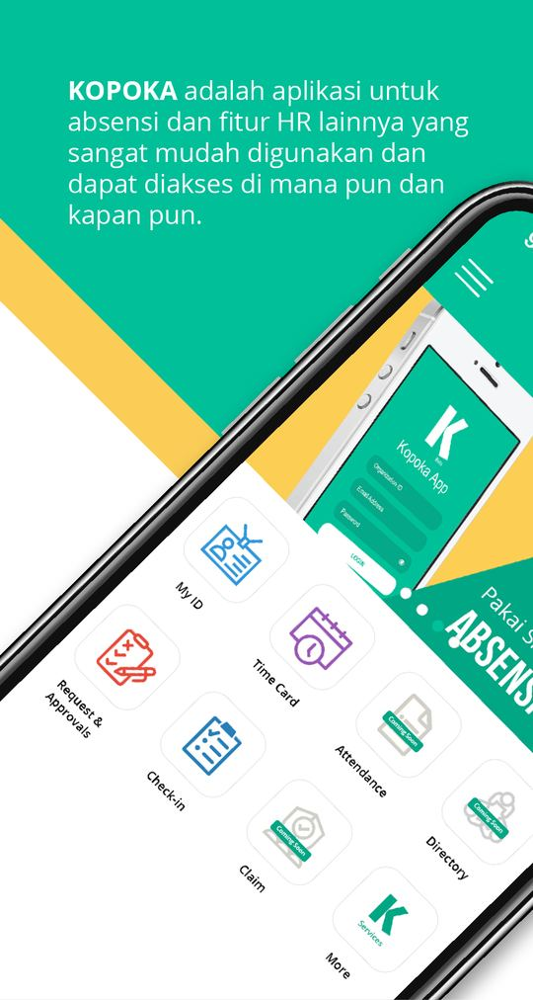
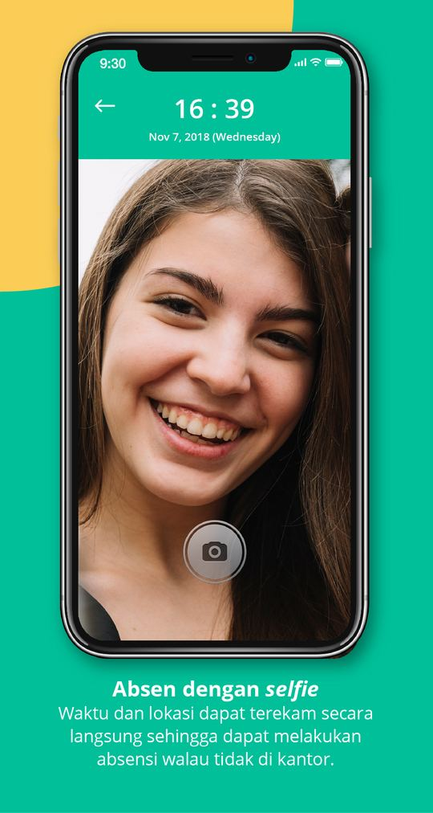
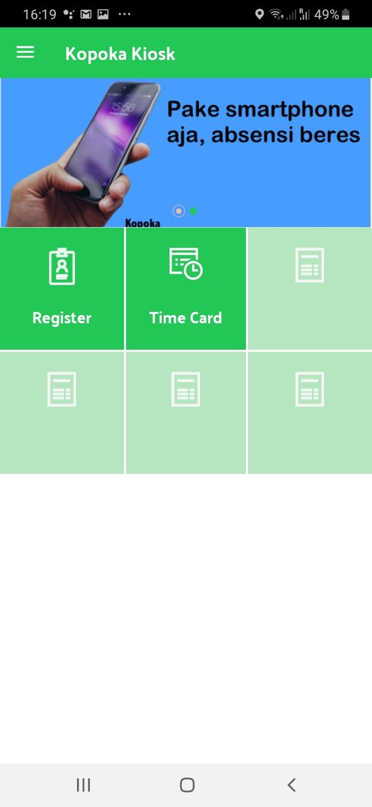
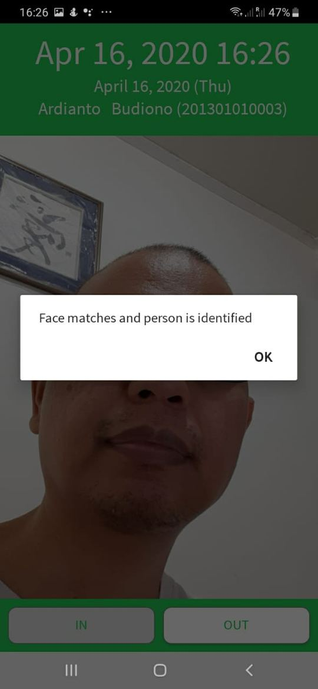
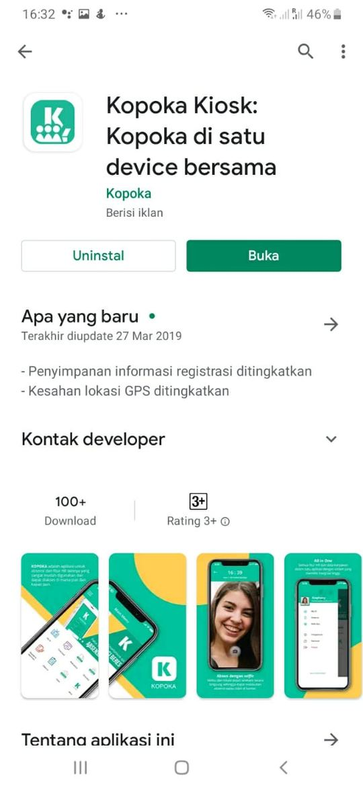
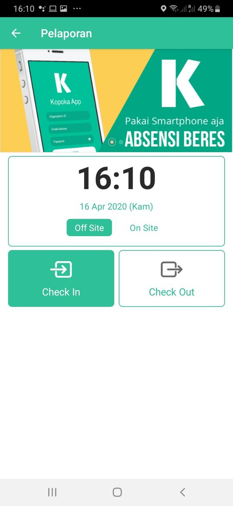
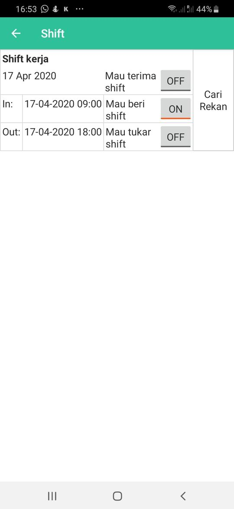
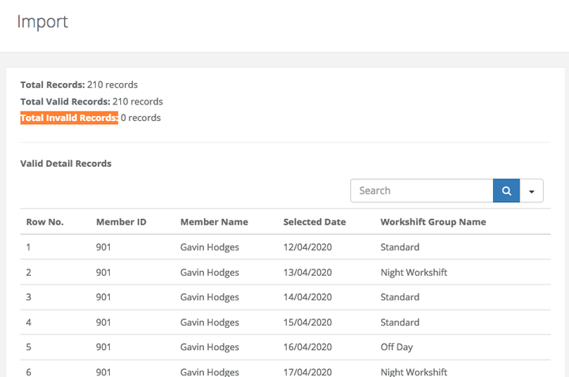

Karyawan
Clock in/out via smartphone, pelaporan kunjungan, pengajuan izin, dan tukar shift langsung dari aplikasi.
Kopoka adalah produk HR SaaS berbasis cloud yang membantu organisasi mencatat absensi dari smartphone, memproses payroll, dan mengelola data SDM dalam satu sistem terhubung.
Manfaat Operasional
Clock in/out via smartphone, pelaporan kunjungan, pengajuan izin, dan tukar shift langsung dari aplikasi.
Memantau absensi dan laporan kunjungan secara realtime, lalu memproses persetujuan dari smartphone.
Mengumpulkan data kehadiran otomatis, mengelola administrasi SDM, serta menghitung payroll lebih konsisten.
Menggunakan model SaaS tanpa investasi software/hardware besar agar tim fokus pada bisnis inti.
Sistem Absensi
Clock in/clock out realtime dengan selfie dan lokasi.
Check-in/check-out kunjungan lapangan dengan foto dan GPS untuk supervisor.
Pencocokan wajah berbasis AI untuk meningkatkan integritas data absensi.
Verifikasi lokasi berbasis Bluetooth untuk area dengan GPS lemah.
Opsi device Android bersama untuk tim tanpa smartphone individu.
Dukungan shift kompleks termasuk alur tukar/pindah shift.
Modul HRIS
Struktur organisasi, desain jabatan, kompetensi, dan analisis beban kerja.
Struktur unit, database staf, diagram organisasi, dan data personel.
Perencanaan, publikasi lowongan, serta manajemen proses seleksi pelamar.
Indikator KPI, planning, coaching, evidence, dan evaluasi periodik.
Katalog pelatihan, jadwal event, dan progres pelatihan individu.
Perencanaan karier, pencarian talenta, dan pengelolaan talent pool.
Shift kerja, reimburse pengeluaran umum, dan ringkasan kehadiran.
Salary entry, kalkulasi lembur, pajak PPh 21, perhitungan gaji, dan slip gaji.
Layar Produk
Screenshot di bawah diambil dari materi pengenalan produk Kopoka dan merepresentasikan alur nyata untuk absensi, pengajuan, reporting, serta operasional dashboard web.








Mulai dengan Kopoka HR SaaS untuk menstabilkan operasional, lalu scale ke transformasi SDM berbasis AI melalui layanan AI SDM Kopoka.